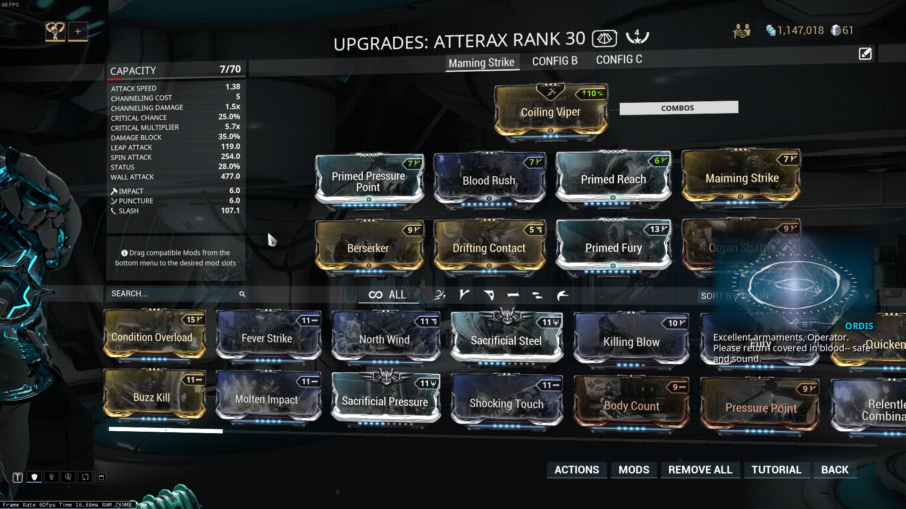
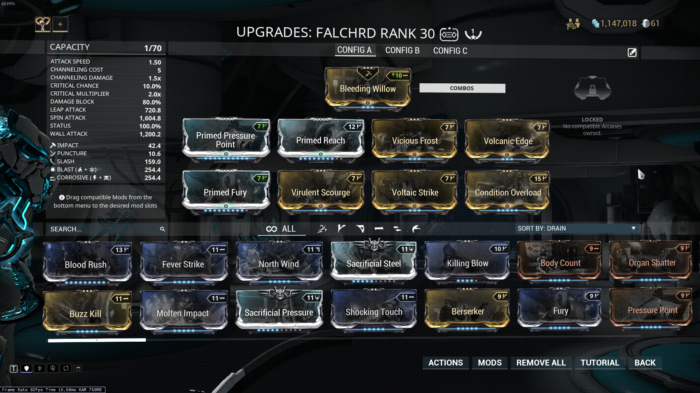

Melee weapons are substantially different from your primary or second weapons, and this is why they get a page all to themselves. First of all, there are three types of melee builds: the one newbies use, the one people who are bad with their money use, and the ones that people who have played the game for too long use. But every single build should use point blank.
For the newbies, it's a two step process. Step one: get a high base damage weapon. Step two: put all the elemental mods on it. Congratulations, you're done. For choosing your weapon, Hammers work fairly well for this build, though they're slow. I recommend a good old polearm, like the orthos. Don't use a dagger, don't use a sword. Unless you don't have anything else.
For the people who are bad with their money, there's ONLY ONE SOLUTION. Step one is to buy about 400-600 platinum, the premium currency. Step two is to trade with another player for the mods you need. The expensive one is maiming strike, but you also need blood rush and body count. The reason you can't farm these mods is because they come from an event. YOu can't get them right now. They're also hard to farm when the event is on. You can get them legit, I did it after all, but it's not exactly fun. Also, you can't do it right now.
For the people who've played way too long, just make a condition overload build. You need five mods: Condition overload, and the four melee dual stat mods. Only one problem. Condition overload is hard to farm. There's only a few enemies that drop it, and you get there fairly late in the game. So you can buy it, for a stupid price, or you can just play the game and get it eventually. Just be patient, it'll drop eventually. But once you have it, it's honestly the best melee mod in the game. Get to 100% status chance, and you're golden, nothing can stand up to your thwack.
Stance mods matter, but this is a basic guide, and with the way stances work, it's more of a list of the ones that "work" instead of a list of things to look for. Just use the one you've leveled up the most.